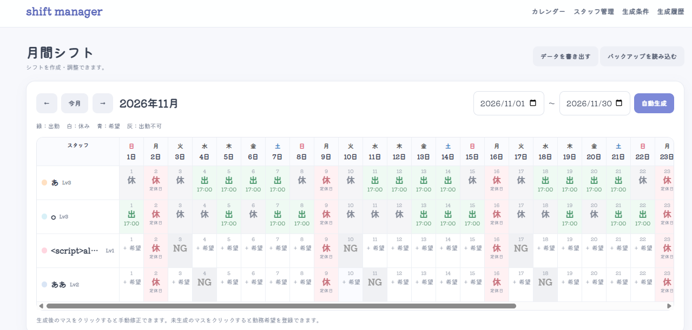
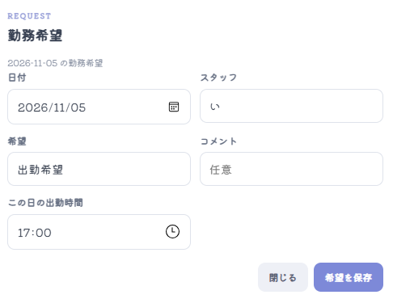
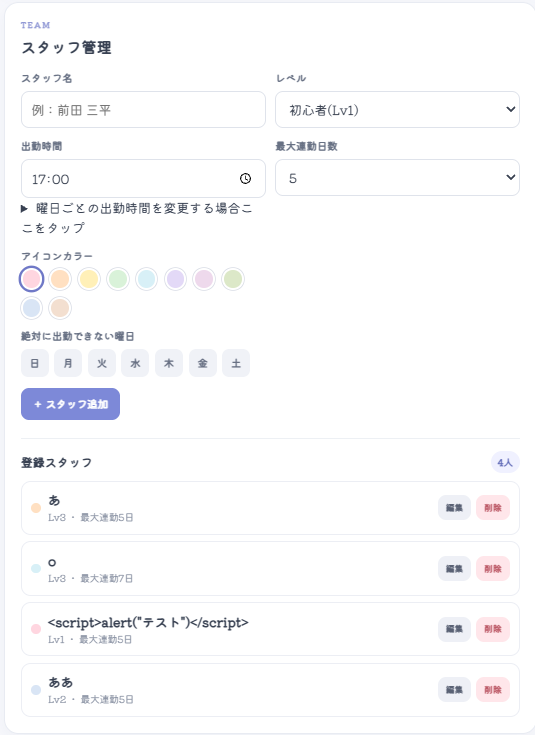
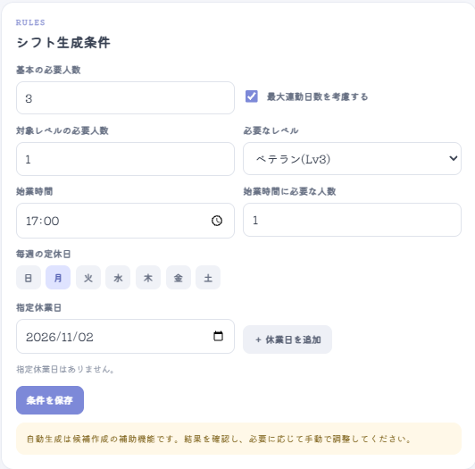
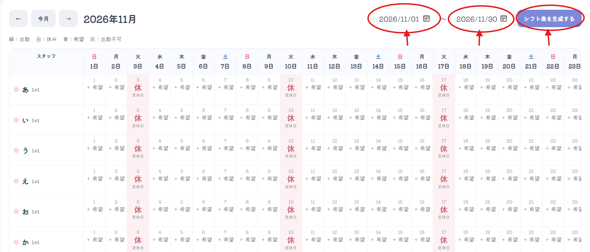
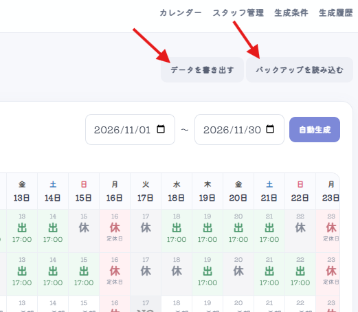
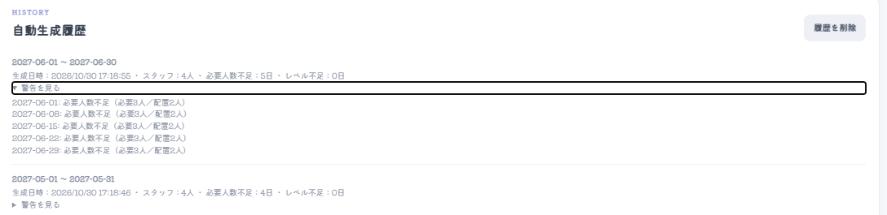

🗓️
月間シフトカレンダー
月ごとの勤務予定を一覧表示。
スタッフは、カレンダーの枠をタップし勤務希望を出せます。
管理者は、スタッフごとの出勤・休み希望を見ながら、日付単位でシフトを確認・調整できます。


シフト管理に必要な情報を、ひとつの画面で確認できます。
月ごとの勤務予定を一覧表示。
スタッフは、カレンダーの枠をタップし勤務希望を出せます。
管理者は、スタッフごとの出勤・休み希望を見ながら、日付単位でシフトを確認・調整できます。


スタッフ名、レベル、アイコンカラー、出勤時間、最大連勤日数、出勤できない曜日などを登録・編集できます。

必要人数、必要なレベル、勤務開始時間、毎週の定休日、指定休業日などを設定できます。

登録したスタッフ情報・希望・条件をもとに
シフト案を自動作成。
作成間隔を指定できます。(最大91日)
作成後は内容を確認して手動で修正できます。

登録データをJSON形式で保存し、
バックアップファイルを読み込んで復元できます。

過去に作成したシフトの履歴を確認し、
作成内容を振り返ることができます。

次の4ステップでシフト案を作成します。
名前・レベル・勤務可能な曜日・出勤時間などを登録します。
作成後も編集可能です。
カレンダーから出勤希望や休み希望を入力します。
必要人数や必要レベル、定休日などを設定します。
自動生成したシフト案を確認し、
必要に応じて手動で調整します。
複数の条件を組み合わせて、シフト作成をサポートします。
実際のシフト管理を想定し、使いやすさと作業の効率化を目指して制作しています。
スタッフ情報・希望・生成条件を分けて管理し、入力した内容を月間カレンダーで確認できる構成にしました。
また、自動生成だけに頼らず、生成後に管理者側が確認して手動で調整できるようにしています。